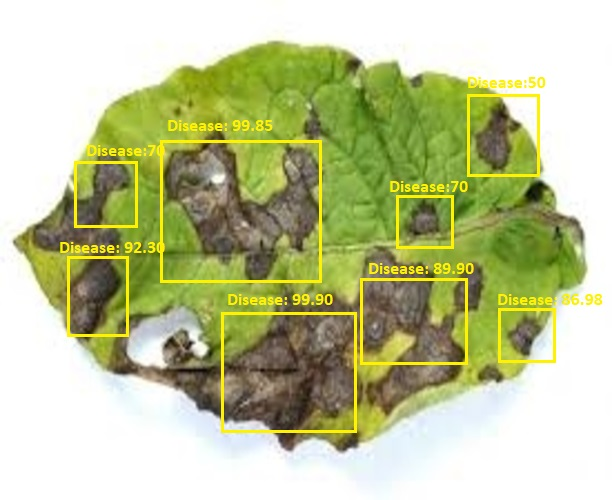

Upload/Drag drop image or video of your crop

Analyzing Data ...
Analyzing Data ...
Buried drip irrigation involves burying drip tape in the subsurface near the planting bed, thereby limiting weeds access to water while also allowing crops to obtain moisture. It is most effective during dry periods.
Stale seed bed is a manual technique which involves cultivating the soil, then leaving it fallow for a week or so. When the initial weeds sprout, the grower lightly hoes them away before planting the desired crop. However, even a freshly cleared bed is susceptible to airborne seed from elsewhere, as well as seed carried by passing animals on their fur, or from imported manure.
Rotating crops with ones that kill weeds by choking them out, such as hemp, Mucuna pruriens, and other crops, can be a very effective method of weed control. It is a way to avoid the use of herbicides, and to gain the benefits of crop rotation.

1. Apple scab overwinters primarily in fallen leaves and in the soil. Disease
development is
favored by wet, cool weather that generally occurs in spring and early summer.
2.
Fungal spores are carried by wind, rain or splashing water from the ground to flowers,
leaves or fruit. During damp or rainy periods, newly opening apple leaves are extremely
susceptible to infection. The longer the leaves remain wet, the more severe the
infection
will be. Apple scab spreads rapidly between 55-75 degrees Fahrenheit.

1. Choose resistant varieties when possible.
2. Rake under
trees and destroy
infected
leaves to reduce the number of fungal spores available to start the disease cycle over
again
next spring
3. Water in the evening or early morning hours (avoid overhead
irrigation)
to give the leaves time to dry out before infection can occur.
4. Spread a 3- to
6-inch
layer of compost under trees, keeping it away from the trunk, to cover soil and prevent
splash dispersal of the fungal spores.
This method is used for transplanted crops. Five packets (1.0 kg) of the inoculants are required for one ha and mixed with 40 litres of water. The root portion of the seedlings is dipped in the solutions for 5 to 10 minutes and then transplanted.
4 kg each of the recommended biofertilizers are mixed in 200 kg of compost and kept overnight. This mixture is incorporated in the soil at the time of sowing or planting
Each packet(200g) of inoculant is mixed with 200 ml of rice gruel/jaggery solution.The seeds required for one hectre are mixed in slurry so as to have uniform coating of the inoculants over the seeds. The treated seeds should be used within 24 hours.

For transplanted rice, suggestion is to dip the roots of seedlings for 8 to 10 hours in a solution of Azospirillum + Phosphotika at 5 kg each per ha.
Azotobacter + Phosphotika at 200 gm each per 10 kg of seed as seed treatment are useful for wheat, sorghum, maize, cotton, mustard etc.
Rhizobium + Phosphotika at 200 gm each per 10 kg of seed as seed treatment are recommended for pulses such as pigeonpea, green gram, black gram, cowpea etc, groundnut and soybean.

Considering the good amount of Rainfall for next 7 days Low Irrigation is recommended
Watering with drip irrigation instead of the traditional overhead spray method can decrease evaporation and save up to 80 percent more water. It also ensure that the water gets to the plants’ roots, which can lead to better growth.
After pre-irrigation, later irrigations depend on soil, weather, and the crop.
Coarse or sandy soil needs water more often than loam, silt, and most clay.
Soil dries out faster when the weather warms up.
Wind speeds up soil drying.
Considering the good amount of Rainfall for next 7 days Medium Irrigation is recommended
Watering with drip irrigation instead of the traditional overhead spray method can decrease evaporation and save up to 80 percent more water. It also ensure that the water gets to the plants’ roots, which can lead to better growth.
After pre-irrigation, later irrigations depend on soil, weather, and the crop.
Coarse or sandy soil needs water more often than loam, silt, and most clay.
Soil dries out faster when the weather warms up.
Wind speeds up soil drying.